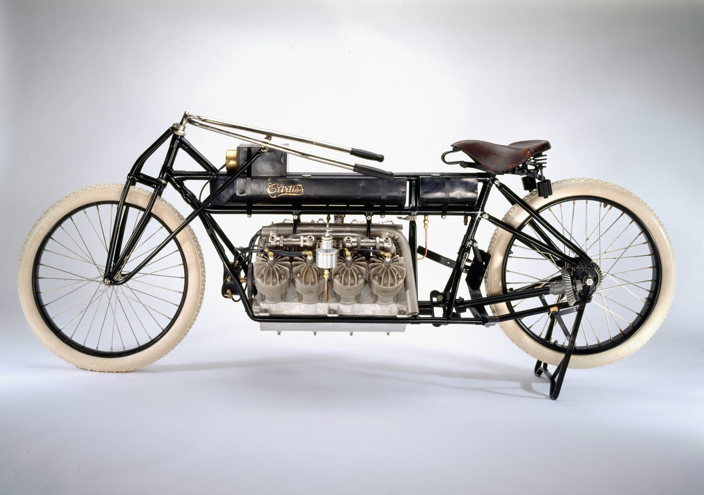
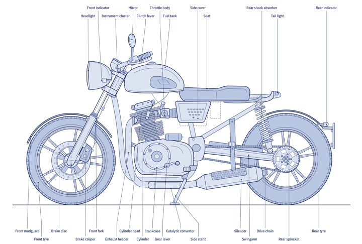
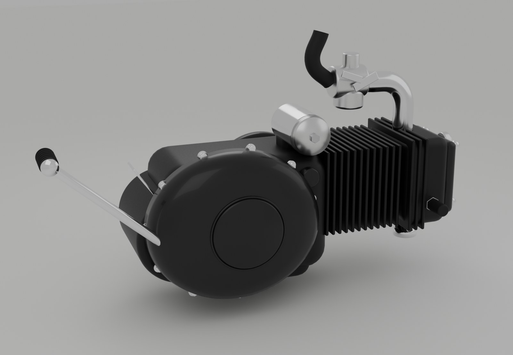
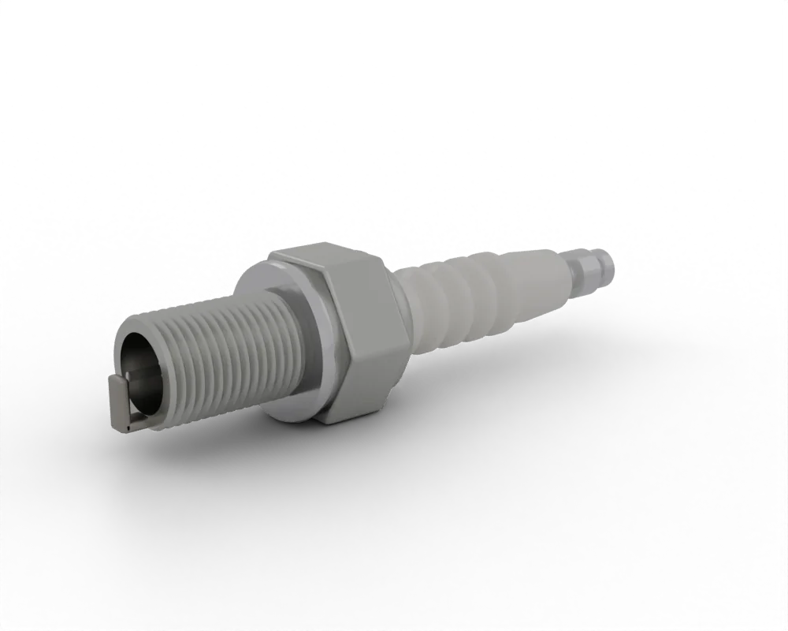
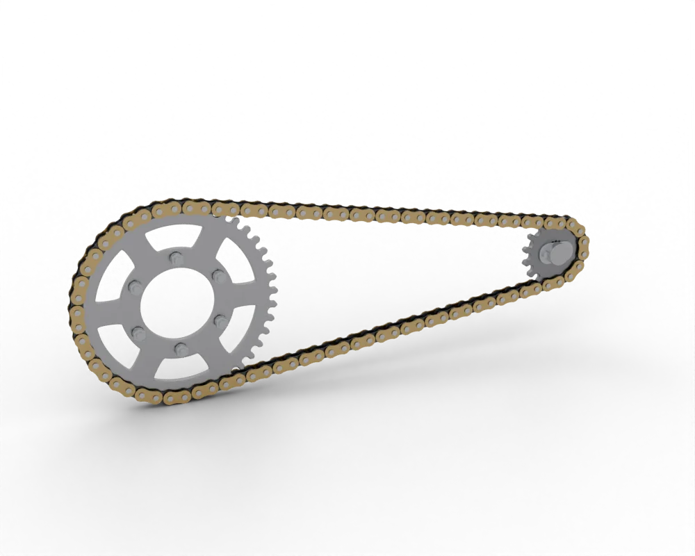
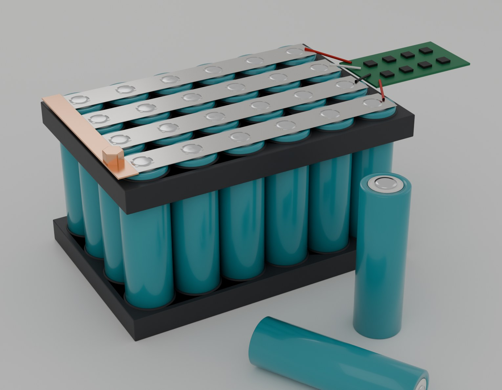
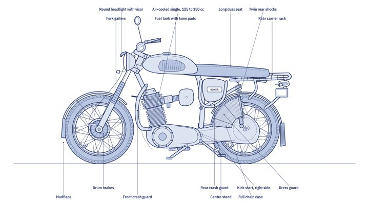

Motorcycle articles
Short, accurate guides to how motorcycles work and how to look after and repair them, written from the Moto Zero course. Each one links into the interactive tools, the Repair section and the full course chapters.
How it works
How engines, clutches, wiring and electric drives work, and the main types of motorcycle.
-

HistoryA short history of the motorcycle
From the steam velocipedes of 1868 to fuel injection, ABS, electric fleets and battery swapping.
8 min read -
 Engine basics
Engine basicsHow a motorcycle engine works
The four-stroke cycle step by step: intake, compression, power and exhaust, with valve timing and compression ratio.
7 min read -
 Engine basics
Engine basicsTwo-stroke versus four-stroke engines
Ports versus valves, power per cc, premix oil, emissions and maintenance compared side by side.
5 min read -
 Drivetrain
DrivetrainHow a motorcycle clutch works
The wet multiplate clutch explained: basket, plates, springs, free play, and how to diagnose slip, drag and judder.
6 min read -
 Electrics
ElectricsMotorcycle wiring basics
Harness, earth return, fuses, colour codes, charging and starting circuits, and a method for tracing faults.
6 min read -
 Electric
ElectricHow electric motorcycles work
Battery pack, BMS, controller, motor and regenerative braking, with the efficiency numbers that set range.
6 min read -

Motorcycle typesTypes of motorcycles
Sixteen types in five families, from the 1885 Reitwagen to the electric boda, and the parts that define each.
6 min read
Maintenance and repair
Checks, diagnosis and routine jobs you can do yourself, with the values to test against. For fault finding by symptom or by part, use the Repair section.
-
 Diagnosis
DiagnosisWhy your motorcycle will not start
A fixed diagnosis order for a non-starting bike: cranking, interlocks, spark, fuel and compression, with test values.
6 min read -
 Electrical
ElectricalWhy your motorcycle battery keeps dying
Three causes of a flat battery and how to test each: battery condition, charging output and parasitic drain.
6 min read -

MaintenanceHow to change your motorcycle oil
When to change the oil, which grade to buy and the drain, clean, refill and check sequence for a typical single.
6 min read -
 Maintenance
MaintenanceHow to check motorcycle brake pads
Pad and disc wear limits, what uneven wear tells you, brake fluid checks and drum brake wear indicators.
5 min read -
 Tyres
TyresMotorcycle tyre pressure and wear
Setting pressures cold, reading wear indicators and sidewall codes, tyre age and safe puncture repair.
5 min read -

IgnitionHow to read a spark plug
What each plug colour means, how to set the gap correctly, and how heat range and plug codes work.
5 min read -
 Fuel system
Fuel systemCarburettor cleaning basics
Match the symptom to the carburettor circuit, rule out the simple causes, then clean and inspect it properly.
6 min read -

MaintenanceMotorcycle chain maintenance
Measure slack and wear, read sprocket teeth, adjust the axle and lubricate an O-ring chain correctly.
5 min read -

ElectricElectric motorcycle battery care
Charging habits, temperature, storage, the BMS and swapping, plus the signs of a pack that must not be charged.
6 min read -

MaintenanceBoda boda maintenance checklist
Daily, weekly and monthly checks for motorcycle taxi riders: tyres, brakes, chain, oil, lights and electrics.
6 min read